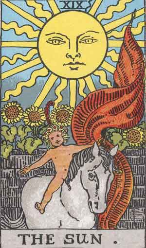

XIX The Sun
The naked child mounted on a white horse and displaying a red standard has been mentioned already as the better symbolism connected with this card. It is the destiny of the Supernatural East and the great and holy light which goes before the endless procession of humanity, coming out from the walled garden of the sensitive life and passing on the journey home. The card signifies, therefore, the transit from the manifest light of this world, represented by the glorious sun of earth, to the light of the world to come, which goes before aspiration and is typified by the heart of a child.
But the last allusion is again the key to a different form or aspect of the symbolism. The sun is that of consciousness in the spirit - the direct as the antithesis of the reflected light. The characteristic type of humanity has become a little child therein--a child in the sense of simplicity and innocence in the sense of wisdom. In that simplicity, he bears the seal of Nature and of Art; in that innocence, he signifies the restored world. When the self-knowing spirit has dawned in the consciousness above the natural mind, that mind in its renewal leads forth the animal nature in a state of perfect conformity.